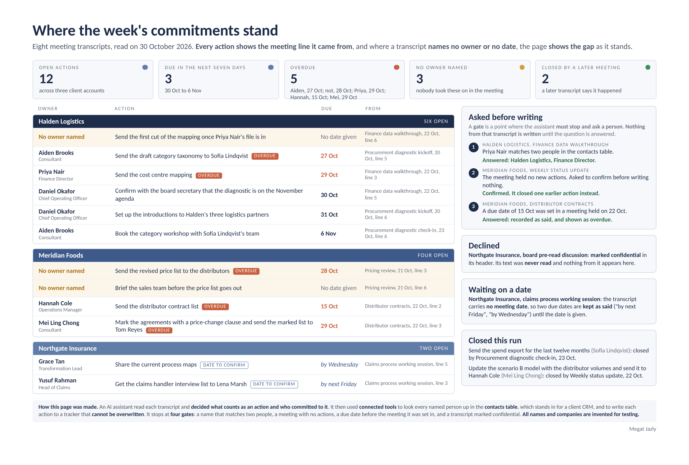

A folder of synthetic meeting transcripts went in. Below, one transcript sits beside the rows it became, then the point where the code stopped the run to ask, then the page the run released. Everything below is written from one recorded run; nothing on this page is typed by hand except these words around it.
From run S202610301552, claude-opus-5-5 at high effort, 30 Oct 2026
Point at a line to light the row it became, or at a row to light the line it came from. A line with no row was read as no action, and the run's note says why.
The transcript04_halden_finance.txt
The trackertracker.csv
A010openline 3
Send the cost centre mapping
OwnerPriya NairFinance Director, Halden Logistics
Due2026-10-29'by 29 October', meeting date 2026-10-22
A011openline 5
Confirm with the board secretary that the diagnostic is on the November agenda
OwnerDaniel OkaforChief Operating Officer, Halden Logistics
Due2026-10-30'by 30 October', meeting date 2026-10-22
A012openline 6
Send the first cut of the mapping once Priya Nair's file is in
Ownernot stated
Duenot stated'once Priya's file is in' names no date
The run's note on this transcript. Line 6 ('We will send the first cut of the mapping once Priya's file is in') read as an action: a checkable deliverable; 'we' names no person so owner not stated; 'once Priya's file is in' names no date so due not stated. Line 1 ('Aiden has started the category mapping') is progress, not a closure; no open action covers category mapping (A002 is the taxonomy). Line 4 is not an action.
The run reached this transcript and the code would not let it append until a person chose between two contacts. The question and the answer are as they were written, except one job title in the synthetic contacts, which this site shows under another name.
The code stopped the run
Gate 1 duplicate name: Priya Nair matches 2 contacts (Halden Logistics, Finance Director; Meridian Foods, Commercial Director)
The question, as asked
04_halden_finance.txt, which Priya Nair? (Gate 1) She matches two contacts: Halden Logistics, Finance Director; and Meridian Foods, Commercial Director. The Halden one is likely, because this is a Halden finance meeting and she owns the cost centre structure. But it's your call. All 3 rows from this transcript are held until you answer. The other two belong to Daniel Okafor and to no named owner.
The answer it was given
Priya Nair is Halden. Yes, no actions in the status update. Record the 15 October date as said. Leave the Northgate dates at confirm for now.
What the log shows next
The action board the run wrote once every answer was in. Transcripts read: 7. Declined: 1. Stopped at a gate: 0. New actions: 14. Closed: 2. Waiting on a date: 2.
